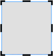

画像と文字の操作 |
選択する
画像または文字をクリック（またはタップ）します。
選ぶと、周りに操作子が表示されます。
移動、変形、回転
 「カラー印刷専用Template」/「カット専用Template」の場合
「カラー印刷専用Template」/「カット専用Template」の場合

「打刻専用Template」/「箔印刷専用Template」の場合

 |
：移動します |
| 移動する他のオブジェクトの上下左右に沿うよう、位置が自動調整されます。 オブジェクトが沿うのは、同一（例：上と上）の端です。 自由に配置したいときは、「ガイドライン」をオフにします。 |
|
 |
：形を変えます |
| ：回転します | |
 |
：縦横比を保ったままサイズを大きくしたり小さくしたりします |
 |
：位置やサイズを変えたくないときにオンにします |
 |
：余分なところを隠し、印刷したい画像にします（画像のときだけ表示） オンにすると、画像の周りにトリミング用の操作子が表示されます  |
 |
：画像の明るさなどの調整や輪郭線に関する設定をします （打刻専用Template、箔印刷専用Templateのときに表示） |